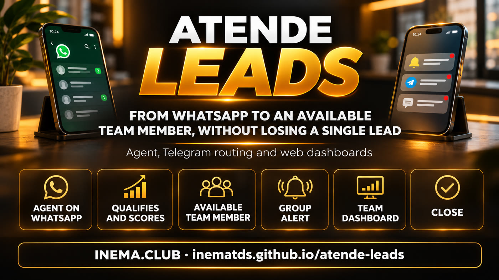

An agent handles WhatsApp, qualifies leads, and assigns them via Telegram to the team member who has been available the longest, with everything they need to call.
Server installation requires a technician: see VPS deployment.
atende-leads is a WhatsApp lead management system built for small businesses such as shops, schools, real estate agencies, and service providers. An agent answers questions, asks what the person is looking for, and scores each lead as hot, warm, or cold. When someone asks to speak to a person or shows an intent to buy, the system notifies via Telegram the team member who has been available the longest, with the lead’s details and a button to call. To use it, you need a server (VPS) with Docker, a domain, a WhatsApp number dedicated to customer support, and a Telegram bot.
What it is
The agent handles the lead; the team closes the deal
The agent handles the first conversation. When there’s a sales opportunity or someone needs help, the lead goes to the right person on the team, in turn, so nobody gets forgotten in the queue.

💬 WhatsApp agent
Answers FAQs, shows prices only for listed products, asks for the person’s name, what they’re looking for, and when they need it, then scores the lead as hot, warm, or cold. Runs through the Evolution API.
🙋 Brings in a person at the right time
In 3 cases: the lead asks, the agent recognizes a need (complaint, problem, or two “I don’t understand” replies), or sees a sales opportunity (price, “I want to buy,” payment).
📨 Offer via Telegram
Sent privately to the team member who has been available the longest: name, phone number, score, interest, summary, and recent messages, with buttons ✅ Accept (Assumir) · ↪️ Pass (Passar) · 📞 Call (Ligar) · 💬 WhatsApp.
🚨 Group alert
If there’s no reply in 2 min, the offer goes to the next person. A hot lead without an owner for 2 min (5 normally), or no one available: an alert goes to the group, and the first person to tap Accept (Assumir) gets the lead.
📌 Pinned team dashboard
A pinned message in the group, EQUIPE AGORA, shows who is available (Livre), handling leads, busy (Ocupado), or away (Fora), plus the queue of leads waiting. It updates whenever something changes.
✅ Close with an outcome
Sold (Vendeu, with amount) · Follow up (Retornar, with date) · Negotiating (Negociando) · Not interested (Sem interesse, with reason) · Invalid (Inválido), with a note by text or audio (audio is transcribed only when WHISPER_CMD is configured in .env). The team member returns to the end of the available queue.
🖥️ Three web dashboards
Lead: chat, a website chat bubble, and a “my support” page. Team: /equipe. Manager: /gestor, with live view, today, leads, records, and CSV export.
🔒 LGPD
Leads can send PARAR or apagar meus dados. The team group never receives a lead’s phone number or message text: only first name, reason, score, and response times.
🧠 Rules-based brain
By default, the agent runs on rules, at no cost and without an API. Optional: local Ollama or a business-owned OpenAI-compatible endpoint, with a fallback to the rules if it fails.
How it works
From “hi” on WhatsApp to closing the deal
Every lead follows the same path. The system stores everything in an SQLite database on your server.
Lead on WhatsApp or website→Agent replies and qualifies→Trigger→Offer to the longest-available team member→🚨 Alert if no one accepts→Team member accepts and calls→Close with an outcome
1
The 3 triggers
Asked for a person (“atendente,” “me liga”), sales opportunity (“quanto custa,” “quero comprar,” “orçamento”), or needs attention (“problema,” “reclamação,” “cancelar”).
2
Turn order
Available team members are queued by the time they became available. Anyone who closes a conversation goes to the end of the queue. A lead who returns within 30 days is offered first to the person who handled them.
3
Time limits
Offer: 2 min. Alert: 2 min for hot leads, 5 min for regular leads. Reminder for a stalled conversation: 30 min. All adjustable in settings.
The process, start to finish
13 steps, from installation to the sale
Who handles each step:
🧠 owner or manager⚙️ system🤖 agent
1
Install on the VPS 🧠 owner
The script asks for a name, domain, and Telegram details; generates secrets, the .env, and dados/negocio.json; then starts Docker. At the end, it displays the manager token: save it, as it’s the password for /gestor. Details in VPS deployment.
./instalar-vps.sh
2
Connect WhatsApp 🧠 owner
Open a tunnel to the VPS, go to the Evolution dashboard at http://localhost:8081/manager, create the instance, and scan the QR Code with your support number. Use a number dedicated to this.
ssh -L 8081:127.0.0.1:8081 usuario@vps
3
Add records 🧠 manager
In /gestor → Records: team members (name, phone, code), products with keywords and prices, FAQs, business hours, and time limits.
4
The team joins the bot 🧠 team
Each team member sends /entrar <código> in a private chat with the bot and taps Available (Livre) 🟢. Their code is the one printed by the installer (for local testing, the one in negocio.json, such as ana-1234).
/entrar <código>
5
A lead arrives ⚙️ system
Via WhatsApp or the website chat bubble. To add the bubble to your website, paste this line before </body> on the pages:
Answers FAQs, shares the listed price, qualifies the lead, and assigns a score.
7
Trigger ⚙️ system
The lead asks for a person, needs attention, or shows a sales opportunity: the system opens a support request and sends a short message to the group, without a phone number.
8
Offer ⚙️ system
Sent privately to the longest-available team member, with details and buttons. If there’s no reply in 2 min, it goes to the next person.
9
Alert 🚨 ⚙️ system
A group message is sent when the time limit expires or no one is available. The first person to tap Accept (Assumir) gets the lead.
10
The team member accepts 🧠 team
Call (Ligar) 📞, reply via WhatsApp (💬), or reply to the support card directly in the bot.
11
Close with an outcome 🧠 team · ⚙️ system
The team member chooses the outcome; the system saves the history, schedules a follow-up, and returns the team member to the queue.
12
The manager tracks progress 🧠 manager
In /gestor: live view, today, leads, and CSV export.
13
Daily backup ⚙️ cron
One database and records backup each day, using the single cron job installed by instalar-vps.sh, stored in /opt/atende-leads-backups/.
docker compose exec -T atende ./atende backup ...
Requirements
What you need
For a local test, you only need Python 3. To use it for real with WhatsApp and Telegram, you’ll need the rest.
🐍 Python 3
Standard library only: no pip install needed to run it. To run tests, install pytest.
python3 --version
🐳 VPS with Docker
A Linux server with Docker and Docker Compose. The app listens only on 127.0.0.1:8080.
docker compose version
🌐 Domain with HTTPS
A reverse proxy (Caddy or Nginx) from your domain to 127.0.0.1:8080. Webhooks require HTTPS.
📱 WhatsApp number
A number dedicated to support, connected through the Evolution API. It can run in the same compose setup (the evolution profile).
✈️ Telegram bot
Create the bot with @BotFather and add it as an administrator to the team group so it can pin the dashboard.
👥 The team
Each team member needs Telegram and a personal code, used for /entrar and the /equipe dashboard.
📖 Terms used in this guide
Lead: someone who has contacted you and could become a customer.
FAQ: a list of common questions with ready-made answers for the agent to use.
Support request: a request for human assistance opened for a lead.
VPS: a rented server on the internet, where the system runs all the time.
Evolution API: software that connects a WhatsApp number to the system (it’s not Meta’s official API). Each connected number is an instance; Baileys is the QR Code connection method.
SQLite: a database in a single file (dados/leads.db), with no separate server.
Ollama: software that runs AI models on your own computer or server; optional here.
Compose profile: a group of services in docker-compose.yml that starts only when requested, such as --profile evolution.
Webhook: your system’s address, called by WhatsApp (Evolution) and Telegram when a message arrives.
Reverse proxy: software (Caddy or Nginx) that receives requests through your domain over HTTPS and forwards them to the system.
Cron: the Linux scheduler that runs a command at the same time every day.
Manager token: the password for the /gestor dashboard; API requests send it in the X-Token header.
Step-by-step user guide
Test it on your computer in 5 minutes
Without WhatsApp and Telegram configured, the integrations stay off while the web dashboards work. This is the fastest way to see the system in action.
The first time, the system copies exemplos/negocio.json to the data folder. If port 8080 is already in use on your computer, use another port (for example --porta 8090) and update it in the addresses in the following steps.
./atende serve --porta 8080 --dados dados
3
Open the three screens
Lead chat at http://localhost:8080/, team at /equipe (sign in with the team member’s code), and manager at /gestor (sign in with the token_gestor from dados/negocio.json).
# in the example, the manager token is TROQUE-ESTE-TOKEN and Ana’s code is ana-1234grep -E '"token_gestor"|"codigo"' dados/negocio.json
4
Enter your business details
Use /gestor → Records, or edit dados/negocio.json. The agent only shares prices listed here. The file contains sample data (team member Ana, “Plano anual,” and a shop FAQ): replace it with your own before receiving real leads.
With ATENDE_AGORA, “now” stays fixed, and you can run time-based tasks (expired offers, alerts, reminders) whenever you like. First stop the server from step 2 (Ctrl+C), then run curl in a second terminal because serve occupies the first.
ATENDE_AGORA=2026-11-09T10:00 ./atende serve --porta 8080 --dados dados
curl -X POST -H "X-Token: TROQUE-ESTE-TOKEN"http://localhost:8080/api/tarefas/rodar
6
Run the tests
There are 313 contract tests. The build and Docker container run only with TESTAR_DOCKER=1.
python3 -m pytest -q tests/
Telegram bot commands
In a private chat with the bot
/entrar <código> links your Telegram to your account
/livre · /ocupado · /fora change your status
/meus your conversations · /retornos today’s follow-ups
/lead <nome ou telefone> brief lead profile
/fechar <id> vendeu <valor> (or retornar, negociando, sem, invalido)
In the team group
/status sends the EQUIPE AGORA dashboard (only in the team group)
Short lines for each support request and 🚨 alerts with the ✅ Accept (Assumir) button
Never a lead’s phone number or message text
Deploy on the VPS
Live with Docker
Variables are in .env.exemplo. If an integration’s variables are missing, that integration stays off and everything else works (web dashboards).
1
Set up
Before installing: create the bot with @BotFather and add it to the team group. The installer asks for the bot token and the group ID (a number that starts with -100). To find the ID, send a command to the bot in the group, such as /start@nome_do_bot (with the default privacy mode, regular messages don’t reach the bot), and open the address below; the group’s chat.id appears in the response. Do this before registering the webhook (step 6), because afterward getUpdates will stop responding.
On the VPS, as root (or with sudo), with git, python3, and Docker installed, clone the project and run the installer. It creates .env and dados/negocio.json for the owner only (umask 077), the manager token and the team’s codes (random), assigns the dados/ folder to uid 1000 (the container doesn’t run as root; without root, it tries sudo -n chown and, if that fails, stops before starting and displays the command), starts compose, with or without Evolution, installs the backup cron job, and prints everything at the end: save it. Running it again (changing the domain, enabling Telegram) doesn’t change the secrets: existing values in .env are reused and the output says which ones; only missing values are generated (a new Postgres password would break Evolution, and a new TELEGRAM_SEGREDO would make the Telegram webhook return 401). The initial records come from the example (the employee Ana, the "Annual plan", a store FAQ): replace them with yours in /gestor → Records before receiving leads. The application listens only on 127.0.0.1:8080, and Evolution on 127.0.0.1:8081.
git clonehttps://github.com/inematds/atende-leads.git /opt/atende-leads
cd /opt/atende-leads
./instalar-vps.sh# without the installer: cp .env.exemplo .env, replace all .env secrets# and the token_gestor and codes in dados/negocio.json (12+ characters);# with Evolution, set EVOLUTION_URL=http://evolution-api:8080 in .env;sudo chown -R 1000:1000 /opt/atende-leads/dados # the container runs as uid 1000docker compose up -d --build# or, with Evolution:docker compose --profile evolution up -d --build
2
Example secrets are blocked from network access
If negocio.json still has token_gestor = TROQUE-ESTE-TOKEN or any code matching one in exemplos/negocio.json, or if an integration is enabled with an empty WEBHOOK_SEGREDO/TELEGRAM_SEGREDO, fewer than 16 characters, or containing troque (or with EVOLUTION_API_KEY containing troque), the server only allows startup on 127.0.0.1/localhost. On 0.0.0.0 (as in Docker), it refuses with the message "run ./instalar-vps.sh or replace the secrets". For testing or demos only, ATENDE_PERMITIR_EXEMPLO=1 is available (never in production).
3
HTTPS
Set up a reverse proxy (Caddy or Nginx) from your domain to 127.0.0.1:8080. The installer fills in url_publica in negocio.json with the domain; check it. The per-IP limits (5 wrong passwords per minute: wrong attempts get 429, the correct one always goes through; 5 new web chat conversations per 10 min, plus an overall cap; 3 web support requests per hour) use the IP from X-Forwarded-For only when the connection comes from a trusted proxy: ATENDE_PROXY_CONFIAVEL (CIDRs; the default covers loopback and private networks, which is how Caddy on the host reaches the container). Empty = never trust X-Forwarded-For. Only the employee the lead was offered to can claim it, or, for a 🚨 alert, whoever clicks Claim first.
Evolution listens only on 127.0.0.1, so open a tunnel from your computer and, while it’s open, go to http://localhost:8081/manager. Sign in with the global API key (EVOLUTION_API_KEY from .env), click Instance +, name it EVOLUTION_INSTANCIA (default loja), select the Baileys channel, save, open the instance, and scan the QR Code with WhatsApp on your phone (Linked Devices → Link a Device).
ssh -L 8081:127.0.0.1:8081 usuario@vps
# without the manager, using the API on the VPS:curl -X POST http://127.0.0.1:8081/instance/create -H "apikey: <EVOLUTION_API_KEY>" \
-H 'Content-Type: application/json' -d '{"instanceName":"loja","integration":"WHATSAPP-BAILEYS","qrcode":true}'
5
Evolution webhook
Set the event to MESSAGES_UPSERT and use the address below. With the evolution profile, compose already points to it over the internal network; with Evolution on another server, set EVOLUTION_URL in .env and configure the webhook there. Messages with remoteJid@lid use the phone number from remoteJidAlt/senderPn; without it, they appear under discarded in /gestor.
With the bot added to the team group as an administrator (so it can pin the dashboard), register the webhook. The token and TELEGRAM_SEGREDO are in the .env created by the installer (grep TELEGRAM_ .env).
instalar-vps.sh already installs it in root’s crontab. It runs inside the container and copies the backup out of the data volume to a 700 folder with 600 files (the backup contains personal data), keeping 30 days.
Messages to Telegram and WhatsApp go through a background outbox: if an API hangs, support and /api/saude keep responding. Above 64 simultaneous connections (ATENDE_MAX_CONEXOES), the server responds with 503, but /api/saude still responds even when full. To update: git pull && sudo chown -R 1000:1000 dados && docker compose up -d --build.
Important. Evolution is not the official WhatsApp API: use a dedicated number and don’t send bulk messages to people who haven’t contacted you. Lead data stays on your server (dados/); the backup contains personal data, so store it with restricted access. The Evolution service in compose doesn’t keep copies of messages or contacts (LGPD). Anyone with the manager token can change the brain address in /gestor: that’s why CEREBRO_API_KEY is sent only to a host listed in CEREBRO_HOSTS_PERMITIDOS in .env (empty = the key isn’t sent).
Screens
What it looks like in practice
Real screens from the system running with sample data (a fictional language school, Monday at 10 a.m.). Telegram screens use the exact text sent by the system.
On the lead’s phone
Lead chat: the agent qualifies what they’re looking for and when they need it, then brings in the team.“My support” page: who’s helping, a button to chat now, and an option to delete your data.Pinned EQUIPE AGORA dashboard in the group: everyone’s status and the queue.
In the team’s Telegram
In private chat: the offer with details and buttons; after accepting, the card with outcome buttons.In the group: a short line for each request and a 🚨 alert when nobody accepts. No phone number.
In the team and manager dashboards
/equipe: status, offers and alerts, open conversations, and today’s follow-ups.Lead profile: history, reply to the lead, and close with an outcome.Live /gestor: team, queue with alerts, who’s handling leads, and transfer options.Today’s /gestor: new leads, requests, sales, sales amount, and figures by team member.
Roadmap
What’s outside v1
Version 1.5.5 delivers what’s described above. These ideas are planned for later.
v1.5.5
TodayRules-based agent, Telegram routing, alerts, pinned dashboard, outcome tracking, three web dashboards, Docker, and backups.
Later
Outside v1Automated voice agent · reply to WhatsApp from the dashboard · drag-and-drop sales pipeline · external CRM via webhook · goals and rankings · multiple numbers · Meta’s official API · customer satisfaction survey.